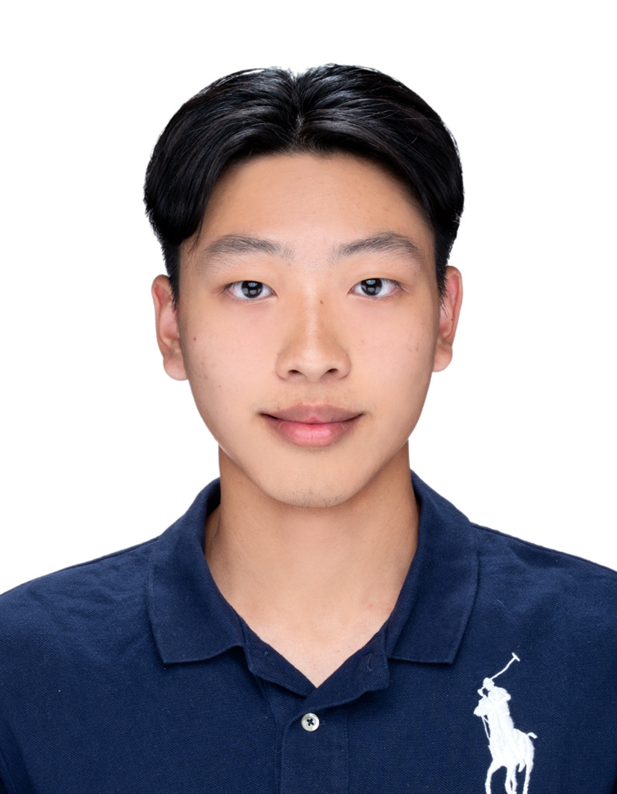

Winston Hou
Quantitative Analysis • Policy Research • Entrepreneurship

Quantitative Analysis • Policy Research • Entrepreneurship
London School of Economics. Top 2 out of 400 global students within academic honor roll cohort parameters.
Evaluated at 126/150 points on the AMC 12, advancing aggressively to AIME validation tiers scoring 9/15.
Diamond Award (Top 3%) global finalist at WMI. Multi-season consecutive gold finishes at the Mathematics Without Borders Finals.
Ranked in the top 500 venture architectures globally out of 23,000+ scaling entries evaluated.
Ranked as a top-tier national representative contender out of 200 elite cross-country logic profiles.
Secured consecutive Grand Championships at the IBSCDO Debate Open and the Taipei Cicero Forensics Arena.
Supported CAPRI’s organizational mission of conducting high-level policy analysis on public health, economic sustainability, and technological integration across the Asia-Pacific region. Formulated an independent policy research paper evaluating the impact of TSMC’s Arizona expansion on Taiwan’s "silicon shield," architecturalizing regional trade datasets and collaborating with executive analysts to unpack supply chain dependencies.
Designed and deployed an end-to-end 20-week incubator curriculum covering corporate framework modeling and pitched market monetization metrics for over 20 active members.
Managed pricing modeling structures and consumer data analytics pipelines for a subscription coffee venture built to maximize economic allocation to Ugandan agrarian initiatives.
Directed pricing scaling models transforming commercial food oil waste streams into sustainable products; drove financial campaigns yielding 100,000 NTD for community infrastructure developments.
Engineered team defensive architectures and athletic drilling frameworks; organized advanced digital video playbook assessments to efficiently onboard incoming underclassmen assets.